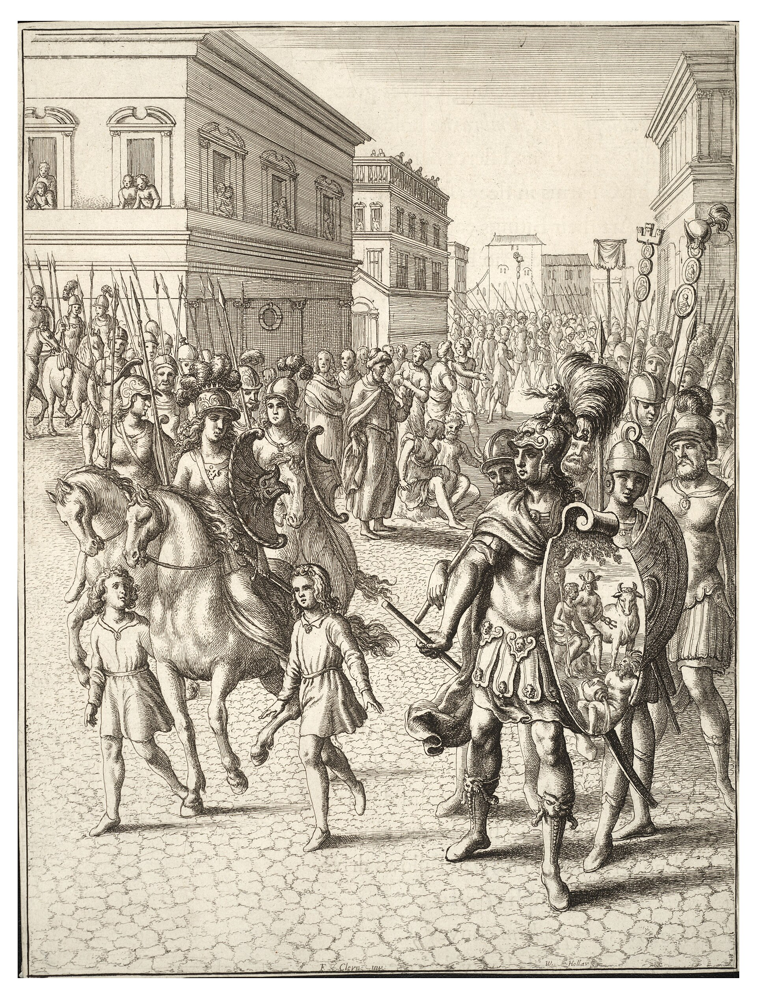

Энеида · песнь 11 из 12
Похороны Палланта. Гибель Камиллы

Кратко
После погребального перемирия Эней с горькой речью провожает домой, к Эвандру, тело Палланта вместе с пленниками, обречёнными на жертвенный костёр, — контраст особенно жесток на фоне почестей юноше. Латинское посольство просит помощи у греческого героя Диомеда, но тот отказывает, хваля доблесть Энея и вспоминая, что все, кто воевал под Троей, наказаны богами — его собственные спутники обращены в птиц. В совете старейшина Дранк обвиняет Турна в том, что война нужна лишь его личной славе и любви к Лавинии, и требует либо поединка с Энеем, либо уступки; Турн гордо отвечает, что не боится, и высмеивает трусость Дранка — спор прерывает весть о наступлении троянцев. Турн устраивает засаду пехоте в теснине, а конный бой на равнине берёт на себя царица-воительница вольсков Камилла, посвящённая Диане. Она совершает подвиги один за другим, пока не увлекается погоней за жрецом Хлореем ради его пышных доспехов — и в этот миг её поражает стрела этруска Аррунта, тайно молившегося Аполлону лишь о славе, не о возвращении. По воле Дианы месть настигает его мгновенно: нимфа Опис поражает Аррунта стрелой, а Камилла успевает передать последнюю волю подруге Акке. Италийское войско обращается в бегство; Турн, узнав о разгроме, покидает засаду и мчится назад, разминувшись в теснине с самим Энеем, — сумерки останавливают бой.
Главные моменты
- Плач Энея над Паллантом соседствует с пленниками, обречёнными на жертвенный костёр.
- Диомед отказывает в помощи: даже победители Трои прокляты за ту войну.
- Спор Дранка и Турна в совете — усталость от войны против уязвлённой воинской чести.
- Камилла в бою — воительница Италии, зеркало амазонки Пенфесилеи.
- Аррунт молится лишь о славе, не о жизни, — и мгновенная кара от Дианы через нимфу Опис.
- Турн и Эней расходятся в теснине на волосок от несостоявшейся ранней развязки.
Значение
Смерть Камиллы ломает италийское сопротивление и приближает неизбежный поединок Энея и Турна, который отсрочила лишь темнота.